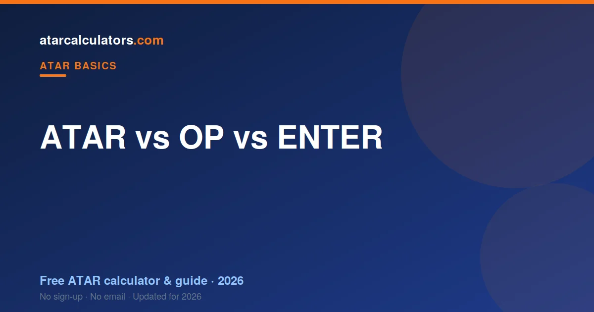

The OP, ENTER, UAI and TER were all older Year 12 ranking systems, one per state. They did the same job as today’s ATAR: rank students for university entry. Most states replaced them with the national ATAR around 2009 and 2010, and Queensland moved from the OP to the ATAR in 2020. They are all ranks, not marks, so the core idea has never changed.
Key takeaways
- The OP, ENTER, UAI and TER were all older, state-based Year 12 ranks.
- They did the same job as the ATAR — ranking students for university.
- The ATAR replaced them nationally around 2009–2010.
- Queensland kept the OP until 2020, the last state to switch.
- The OP ran 1 to 25 (1 was best); the ATAR runs 0.00 to 99.95 (higher is better).
- They are all ranks, not marks, so the underlying idea never changed.
- You cannot exactly convert an old score to an ATAR, only estimate.

Why states used to have different systems
For decades, education in Australia was run state by state. Each state built its own Year 12 certificate, its own exams, and its own way of ranking students. So each state ended up with its own rank, under its own name.
This worked within a state, but it caused problems across borders. A university in one state could not easily compare a student from another, because the ranks were on different scales. A national rank was the obvious fix, and eventually every state adopted one.
The OP: Queensland’s old system
Queensland used the Overall Position, or OP. It was a band from 1 to 25, where 1 was the best and 25 the lowest. This is the reverse of the ATAR, which trips people up: a low OP was a strong result.
The OP grouped students into 25 broad bands rather than a fine rank. An OP of 1 put you in the top few per cent of the state. Queensland ran the OP for many years before switching to the ATAR in 2020, the last state to make the change. See how ATAR is calculated in QLD today.
The ENTER: Victoria’s old system
Victoria used the Equivalent National Tertiary Entrance Rank, or ENTER. Despite the name, it worked much like today’s ATAR: a rank from 0 to 99.95, where higher was better.
The ENTER was calculated from VCE study scores, in almost the same way the ATAR is now. When the national ATAR arrived, Victoria’s change was mostly a change of name and scale details. A student who understood the ENTER already understood the ATAR. See how ATAR is calculated in VIC.
The UAI: NSW and the ACT
New South Wales and the ACT used the Universities Admission Index, or UAI. Like the ENTER, it was a rank where higher was better, calculated from scaled HSC marks.
The UAI ran up to 100, in fine steps, and served exactly the role the ATAR does now. NSW and the ACT moved to the ATAR around 2009. See how ATAR is calculated in NSW today.
The TER: South Australia, WA, NT and Tasmania
Several states used the Tertiary Entrance Rank, or TER, including South Australia, Western Australia, the Northern Territory and Tasmania. As the name suggests, it was another rank for tertiary entry.
The TER worked on similar principles to the ENTER and UAI: scale each subject, combine the best results, and rank students against their age group. These states also moved to the ATAR around 2009 and 2010.
The old systems at a glance
Here is how the old names line up, so the alphabet soup makes sense:
| Old system | Where | Scale | Replaced by ATAR |
|---|---|---|---|
| OP | Queensland | 1–25 (1 = best) | 2020 |
| ENTER | Victoria | 0–99.95 (higher = better) | ~2009–2010 |
| UAI | NSW and ACT | up to 100 (higher = better) | ~2009 |
| TER | SA, WA, NT, Tas | higher = better | ~2009–2010 |
Notice that only the OP ran “backwards”, with 1 as the top. Every other system, and the ATAR, put the high numbers at the top.
When the ATAR took over
The move to a single national rank happened in stages. Most states adopted the ATAR around 2009 and 2010, replacing the ENTER, UAI and TER. Queensland held on to the OP the longest, switching only in 2020.
The reason was fairness across borders. With one national rank, a student in Perth and a student in Sydney could be compared for the same course on the same scale. The ATAR made university admissions consistent across the country.
Can you convert an old OP or ENTER to an ATAR?
Roughly, but not exactly. Because the OP used broad bands and the ATAR uses a fine rank, there is no perfect one-to-one match. Official conversion tables existed to map an OP band to an ATAR range, so an OP of 1 mapped to a high ATAR, and so on.
The ENTER, UAI and TER are easier, because they were already fine ranks close to the ATAR’s scale. But any conversion is a guide, not an exact figure. If you need to convert an old score for an application, check with the relevant admissions centre for the official mapping.
What this means for you today
If you are in Year 12 now, you will receive an ATAR, wherever you study. The old systems are gone. The only time they come up is when an older relative compares their result to yours, and now you can translate.
The reassuring part is that the core idea has never changed. Every one of these systems was a rank, not a mark. Understand that, and you understand all of them. Try our ATAR calculators to see where your results land on today’s scale.
Why one national rank is fairer
The old state systems were not wrong, but they created an awkward gap. A student in Queensland with an OP of 3 and a student in Victoria with an ENTER of 94 might be equally strong, yet their scores looked nothing alike. Universities had to translate between systems, and students moving interstate faced confusion.
A single national rank fixed this. With the ATAR, the same number means the same thing everywhere, so a course can compare every applicant on one scale. That fairness across borders is the main reason every state eventually adopted it.
What parents and older siblings should know
If someone in your family finished school before about 2010, they almost certainly received an OP, ENTER, UAI or TER, not an ATAR. Their advice about “what score you need” may be framed in the old system, so it helps to translate before comparing.
The good news is that the thinking still transfers. All these systems ranked students for university, rewarded consistent strong results, and used scaling to compare subjects. A parent who understood their ENTER already understands most of how your ATAR works.
Common questions
What's the difference between OP and ATAR?
The OP was Queensland’s old rank, running 1 to 25 with 1 as the best. The ATAR runs 0.00 to 99.95 with higher as better. Both are ranks for university entry; Queensland switched from the OP to the ATAR in 2020.
When did Queensland switch from OP to ATAR?
Queensland switched from the OP to the ATAR in 2020, making it the last state to adopt the national ATAR. Every Queensland student now receives an ATAR calculated by QTAC.
What was the ENTER score?
The ENTER (Equivalent National Tertiary Entrance Rank) was Victoria’s old rank, running 0 to 99.95 with higher as better. It worked much like today’s ATAR and was calculated from VCE study scores.
What was the UAI?
The UAI (Universities Admission Index) was the old rank used in NSW and the ACT, calculated from scaled HSC marks. It was replaced by the national ATAR around 2009.
How do I convert an old OP to an ATAR?
You can only estimate. Official tables mapped an OP band to an ATAR range, since the OP used broad bands and the ATAR uses a fine rank. For an exact figure, check the relevant admissions centre’s official conversion.
Is the ATAR harder than the OP?
Not harder, just finer. The OP had 25 broad bands, while the ATAR ranks students in steps of 0.05. Both rank you against your age group; the ATAR simply gives a more precise position.